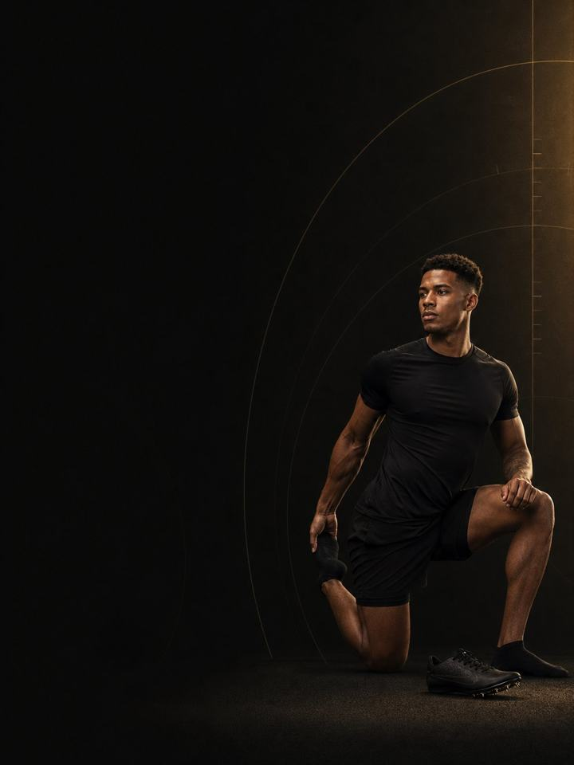

السرعة الخطية · الاستشفاء
الأوتار تحفظ الحساب طوال الموسم. وهذه هي الكتلة التي يُسدَّد فيها الدين.
- مناسب لـعدّائي السرعة ولاعبي الوثب وعدّائي الحواجز بعد موسمهم
- أيام التدريب3 أيام في النادي أسبوعيًا خارج الموسم، أو 2 في النسخة القصيرة
- مدة الجلسة48–60 دقيقة
- المعداتنادٍ متكامل فيه أجهزة وزلّاجة، إضافة إلى دراجة أو مسبح
- الصيغةملف PDF للهاتف، وكل تمرين مرتبط بفيديو توضيحي
لمن هذا البرنامج
عدّاؤو السرعة ولاعبو الوثب وعدّاؤو الحواجز الذين انتهى موسم منافساتهم للتو.
العَدْو والقفز أعلى ما يفعله الجسم طوعًا من حيث الارتطام. وموسم كامل منهما يترك أوتار أكيلس، والأوتار الرضفية، وقصبة الساق، والعضلات الخلفية للفخذ تحمل ضررًا لا تسنح له فرصة للتعافي، لأن الجلسة التالية دائمًا على بُعد ثلاثة أيام. هذه الكتلة هي النافذة الوحيدة في السنة التي يتوقّف فيها الارتطام فعلًا: أربعة أسابيع بلا عَدْو إطلاقًا، ثم عودة مرحلية. وهي أيضًا الكتلة الوحيدة التي يكون فيها اكتساب الحجم والقوة هو الأولوية لا أثرًا جانبيًا، لأن العضلات التي تُبنى الآن سرعةٌ متاحة لاحقًا في السنة.
موقعه في السنة: الكتلة 4 من 4. الأساس، والبناء، والمنافسة، والاستشفاء، ثم العودة إلى الأساس. ابدأه فور انتهاء منافستك الأخيرة.
قبل الأسبوع 1، خذ أسبوعين من الراحة التامة. لا مضمار، ولا رفع أثقال، ولا قفز. امشِ، واسبح، ونَم. هذا جزء موصوف لا اختياري، وهو الجزء الذي يتخطّاه معظم الرياضيين.
أسبوعك
ثلاثة أيام غير متتالية، تُنفَّذ بالترتيب. الجلسات أطول منها في كتلتي البناء والمنافسة، بشدة أقل بكثير.
| الأحد | الاثنين | الثلاثاء | الأربعاء | الخميس | الجمعة | السبت |
|---|---|---|---|---|---|---|
| اليوم 1 | راحة | اليوم 2 | راحة | اليوم 3 | راحة | راحة |
النسخة القصيرة: اليوم 1 واليوم 2 فقط، مع يومَي راحة على الأقل بينهما.
كل جلسة تسير بالطريقة نفسها:
- الإحماء، 8–10 دقائق. التسلسل نفسه في كل مرة. تنشيط الأرداف والوركين والكتفين أولًا.
- السرعة والقدرة الانفجارية، 12–15 دقيقة. القفز والرمي بعد عودتهما. لا عَدْو ولا قفز في المرحلة 1.
- القوة، 20–25 دقيقة. الرفعات المركّبة، مع دقيقتين إلى ثلاث دقائق بين المجموعات.
- عمل الأنسجة، 8–10 دقائق. النوردي وكوبنهاغن والسمانة. في النهاية، ولا يُحذف أبدًا.
كيف تتقدّم الأسابيع الـ12
ثلاث مراحل، مدة كل منها أربعة أسابيع. الحجم أولًا، ثم الحمل، ثم الارتطام أخيرًا. تتكيّف الأوتار والعظام أبطأ بكثير من العضلات، ولا تعيد بناء نفسها إلا عندما ينخفض التحميل فعلًا، وهو ما لا يسمح به موسم المنافسات أبدًا. ومشكلات وتر أكيلس والوتر الرضفي في هذه العائلة تكاد تكون دائمًا تراكمية لا مفاجئة. أربعة أسابيع بلا ارتطام ليست تدريبًا ضائعًا، بل هي فترة الصيانة التي تجعل الكتل الثلاث التالية ممكنة.
| الأسابيع 1–4 | الأسابيع 5–8 | الأسابيع 9–12 | |
|---|---|---|---|
| المرحلة | تعافي الأوتار | التضخّم العضلي | القوة والمرونة الارتدادية |
| الهدف | إتاحة التعافي للأوتار مع انعدام أحمال الارتطام | بناء الكتلة العضلية والقوة القصوى العامة | استعادة إنتاج القوة والقوة الارتدادية قبل استئناف العَدْو |
| كيف يبدو | أجهزة، ومدى حركي متحكَّم فيه، وتكرارات أعلى، ولا ارتطام | تعود الأوزان الحرة، وترتفع الأحمال، ويعود القفز منخفض الشدة | يعود الجري تدريجيًا، بدءًا من 70% من الجهد |
| المجموعات الفعلية أسبوعيًا | 59 | 64 | 68 |
| متوسط الجهد | جهد 6.2/10، والتكرارات المتبقية نحو 4 | جهد 7.1/10، والتكرارات المتبقية نحو 3 | جهد 7.7/10، والتكرارات المتبقية نحو 2 |
| مرات الهبوط أسبوعيًا | 0 | 100 | 68 |
| الرميات أسبوعيًا | 0 | 0 | 20 |
المرحلة في لمحة
المجموعات التدريبية أسبوعيًا حسب ما تدرّبه. الخط المتقطع هو مستوى الجهد.
موقع هذه المرحلة في السنة التدريبية
نفّذ المراحل الأربع بالترتيب لتكتمل سنة تدريبية كاملة.
الجهد (RPE) تقييم من 10 لمدى صعوبة المجموعة. والتكرارات المتبقية هي عدد التكرارات الجيدة الإضافية التي كنت تستطيع أداءها، فعبارة «التكرارات المتبقية نحو 3» تعني أنه يتبقى في الخزان نحو 3 تكرارات.
أسابيع التخفيف: الأسبوعان 6 و12 أخف، بنصف المجموعات. ينبغي أن يسلّمك الأسبوع 12 إلى كتلة الأساس التالية مرتاحًا وأثقل وزنًا، لا متعبًا.
القواعد التي تجعله ينجح
- أسبوعان من الراحة التامة، ثم أربعة أسابيع بلا ارتطام. لا عَدْو، ولا قفز، ولا بلايومترك حتى الأسبوع 5. هذه هي النافذة الحقيقية الوحيدة في التقويم لإصلاح الأوتار.
- هذه هي الكتلة التي تكبر فيها. تكرارات أعلى، وحجم أكبر، وإذن بزيادة بعض الوزن. العضلات التي تُبنى خارج الموسم تصبح قوة في الربيع. والعضلات التي تُلاحَق في أبريل تصبح تعبًا.
- الحجم، ثم الحمل، ثم السرعة. ترتفع التكرارات في المرحلة 1، ويرتفع الوزن في المرحلة 2، ويعود الجري في المرحلة 3. وحتى حينها يبدأ عند 70% ثم يُبنى تدريجيًا.
- عالج ما جريت رغمه. لكل عدّاء سرعة شيء ما. طبّق برنامج AXIS التصحيحي المناسب بالتوازي مع المرحلتين 1 و2، للعضلات الخلفية للفخذ، أو وتر أكيلس، أو الورك، أو أسفل الظهر. لا توجد في السنة نافذة أخرى من اثني عشر أسبوعًا مثل هذه.
- أنهِ الكتلة مرتاحًا وأثقل وزنًا، لا متعبًا. فترة خارج الموسم التي تنتهي بالإنهاك فشلت في مهمتها الوحيدة.
- احسب مرات الهبوط. كل قفزة، وحجلة، ووثبة، وهبوط من ارتفاع يُحتسب، بما في ذلك قفزات الإحماء. لا هبوط إطلاقًا في المرحلة 1، ويستخدم الإحماء رفع السمانة بدلًا منه. ومن الأسبوع 5 يبقى الأسبوع تحت نحو 100 هبوط، مع احتساب تدريب رياضتك إضافةً إليه.
المصطلحات
- الكتلة التدريبية: 12 أسبوعًا. هذا البرنامج. تطوّر الكتلة الواحدة مجموعة واحدة من الصفات إلى مستوى محدّد.
- المرحلة (الدورة المتوسطة): 4 أسابيع. تستهدف كل منها صفة واحدة. وأربعة أسابيع اختيار لا قاعدة، فالمدة تتبع الهدف.
- الأسبوع التدريبي (الدورة الصغرى): حيث يرتفع الجهد، وتُضاف المجموعات، ويقع أسبوع التخفيف.
- السنة التدريبية (الدورة الكبرى): أربع كتل بالترتيب (الأساس، والبناء، والمنافسة، والاستشفاء)، نحو 48 أسبوعًا.
كيف تقيس تقدّمك
من الأسبوع 5، بعد عودة القفز، يبدأ كل أسبوع بفحص مدته 90 ثانية: ثلاث وثبات طويلة من الثبات في بداية اليوم 1، وتحتفظ بأفضلها. إذا كانت النتيجة أقل من متوسطك المتحرّك بأكثر من 10%، فخفّف ذلك اليوم: تُحذف تمارين القدرة الانفجارية، وتخسر كل رفعة مجموعة واحدة، أيًا كان المكتوب في الصفحة.
شكل التقدّم الجيد
- الأسابيع 1–4: تهدأ الأوتار، ويتلاشى تيبّس الصباح، ويبدو التدريب سهلًا لأنه مقصود أن يكون كذلك.
- الأسابيع 5–8: تعود القوة والعضلات بسرعة. هنا يحدث فعلًا عمل تكوين الجسم في السنة.
- الأسابيع 9–12: يعود العَدْو تدريجيًا على ساقين حصلتا على راحة حقيقية.
الوصول إلى كتلة الأساس التالية بوزن أعلى، وقوة أكبر، وبلا ألم هو الهدف كله.
احترم الأسبوع
احسب كل شيء: رياضتك، والنادي، والنوم. القفزات المفاجئة في حمل التدريب الأسبوعي هي أوثق مؤشر على الإصابة في الرياضة غير الاحترافية. احمِ 7–9 ساعات من النوم، فهو أقوى أداة متاحة للأداء، وأرخصها.
الأدلة العلمية
كل برنامج في المكتبة مبني على أبحاث منشورة، وقوة تلك الأبحاث مذكورة صراحةً لا ضمنًا. وحيث تكون الأدلة محدودة، تقول الصفحة ذلك.
| النتيجة | المصدر | ما لا تُظهره |
|---|---|---|
| آلام أوتار الطرف السفلي تستجيب للتحميل المتدرّج. أما أي قاعدة تدرّج هي الأفضل فلم يثبت بعد. | Escriche-Escuder, Casaña & Cuesta-Vargas, BMJ Open 2020. Systematic review, 30 RCTs in Achilles, patellar and gluteal tendinopathy. PMID 33444210 | معظم البرامج تتدرّج بحسب الألم، وهذه الممارسة غير مدعومة بأدلة قوية. انسب الفضل إلى التحميل، لا إلى إيقاع بعينه. ولم يثبت تفوّق التمرين اللامركزي وحده. |
| البرامج التي تتضمّن تمرين نورديك للعضلات الخلفية للفخذ تخفض إصابات العضلات الخلفية للفخذ إلى النصف تقريبًا. | van Dyk, Behan & Whiteley, Br J Sports Med 2019. Meta-analysis, 15 studies, 8,459 athletes. PMID 30808663 | نسبة الخطر 0.49. يصغر الأثر لكنه يبقى قائمًا عند استبعاد الدراسات الثماني عالية خطر التحيّز (0.55). وهي تقيس البرامج التي تتضمّن التمرين، لا التمرين وحده. |
| تدريب القوة يخفض الإصابات الرياضية إلى أقل من ثلث معدلها في المجموعة الضابطة. أما الإطالة فلا تخفضها. | Lauersen, Bertelsen & Andersen, Br J Sports Med 2014. Meta-analysis of 25 RCTs, 26,610 participants. PMID 24100287 | نسبة الخطر 0.32 لتدريب القوة و0.96 للإطالة. تفاوتت التجارب كثيرًا، ولم تكن الجرعة موحّدة. |
| تمرين واحد للعضلات الضامّة، يُؤدّى ثلاث مرات أسبوعيًا قبل الموسم ومرة أسبوعيًا خلاله، خفض مشكلات أعلى الفخذ الداخلي المبلَّغ عنها بنسبة 41%. | Harøy et al., Br J Sports Med 2019. Cluster-randomised trial, 35 teams, 652 male footballers. PMID 29891614 | نسبة الأرجحية 0.59. المشكلات مبلَّغ عنها ذاتيًا، وفي كرة القدم شبه الاحترافية للرجال فقط. ولم تُكرَّر الدراسة على النساء أو في رياضات أخرى. |
| أي وصفة تدريب معقولة أفضل من عدم التدريب. الأحمال الأثقل تحتل المرتبة الأعلى للقوة، والمجموعات المتعددة تحتل المرتبة الأعلى لحجم العضلات. | Currier et al., Br J Sports Med 2023. Network meta-analysis, 178 strength and 119 hypertrophy studies. PMID 37414459 | كانت الفروق بين الوصفات صغيرة، وكلها نجحت. |
ماذا بعد
بعد 12 أسبوعًا:
- ابدأ السنة التالية: السرعة الخطية · الأساس
- شيء واصلت الجري رغمه: السلسلة التصحيحية
قبل الشراء: احصل على موافقة طبية أولًا إذا
- كان لديك ألم في الصدر، أو ضيق تنفس غير معتاد، أو خفقان، أو دوخة أثناء المجهود.
- كان لديك ضغط دم مرتفع غير منضبط، أو مرض قلبي معروف، أو خضعت لعملية جراحية مؤخرًا.
- كنتِ حاملًا أو بعد الولادة بفترة قصيرة. احصلي على موافقة وبرنامج مخصص أولًا.
- كان لديك ألم حاد في مفصل واحد لا يهدأ. ابدأ ببرنامج أكسس التصحيحي المناسب.
هذا البرنامج إرشاد عام للياقة البدنية، ولا يغني عن التقييم الطبي.